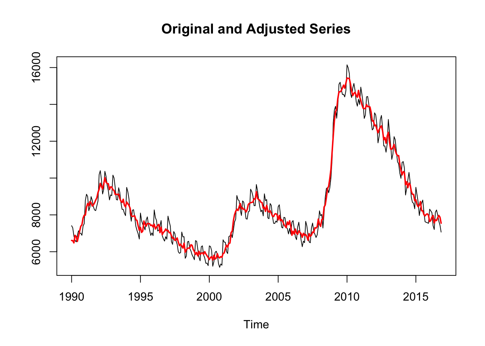
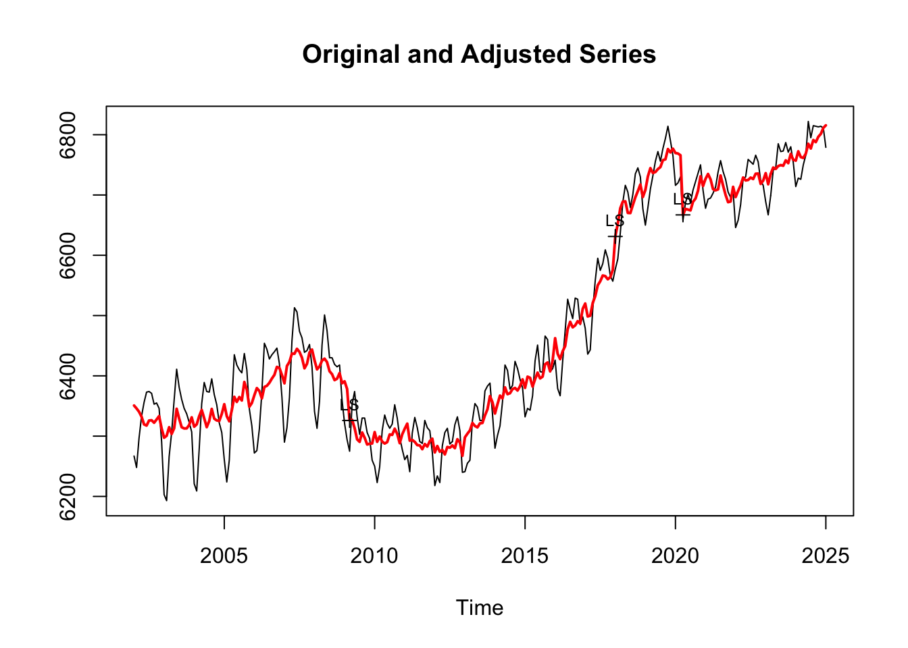
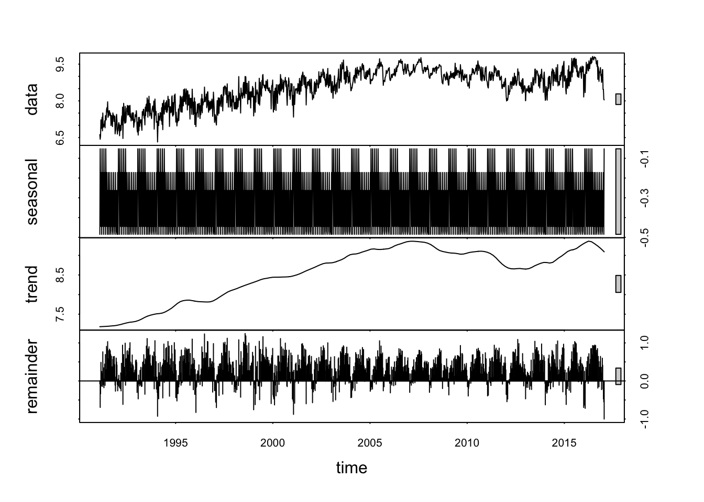
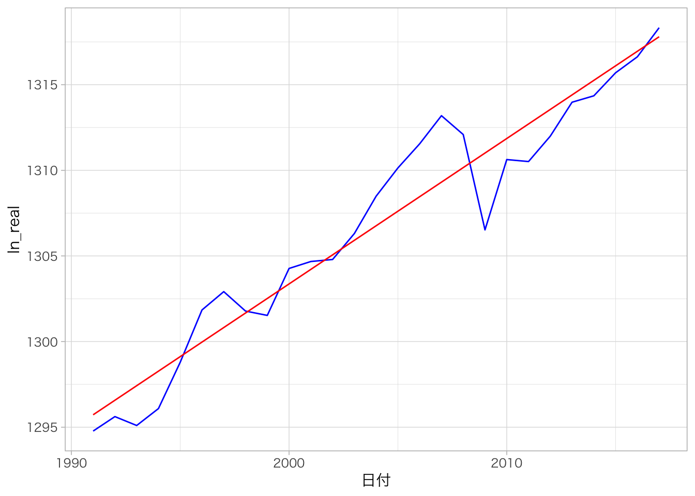
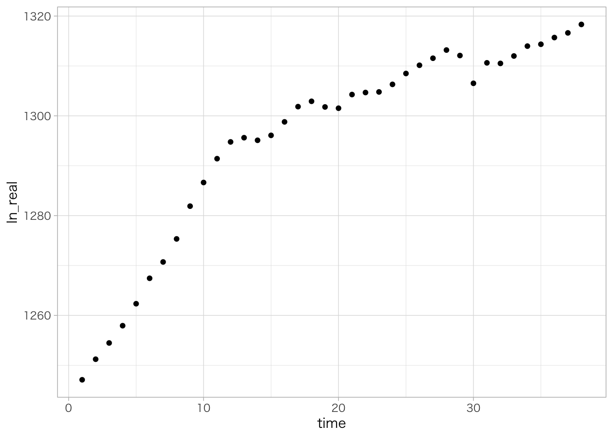

8 時系列データ操作
第8章「時系列データ操作」では、時系列データに特有の操作方法について解説します。
時系列データ（time series data）とは、ある観測対象個体について、複数の時点で情報を観測したデータです。例えば、日本を対象に10年間の四半期別GDPの値を収集したデータが、時系列データに該当します。これに対し、複数の観測対象個体について単一の時点で情報を観測したデータを横断面データ（cross section data）と言います。
時系列データ特有の操作には、変化率やラグなどのデータ変換、日次・月次などの頻度変換、季節調整、トレンドや構造変化の推定などがあります。
8.1 第8章の準備
8.1.1 パッケージのインポート
library(forecast)
library(mFilter)
library(mgcv)
library(pbapply)
library(seasonal)
library(strucchange)
library(tidyquant)
library(tidyverse)
library(zoo)8.1.2 外部データセットの取得
この章では、外部データセットとして以下のデータを使用します。第2章のコードを使用してあらかじめウェブからデータセットを取得してください。
- OWIDのCOVID-19データセット：
data_owid - 日本の産業別就業者数：
data_labor
また、この章では、西山 他（2019）のデータセットを使用します。西山 他（2019）のサポートウェブサイトからデータファイルを取得し、各自の実行環境のワーキングディレクトリ直下にdata_nishiyamaフォルダを作成して、その中に格納してください。
8.2 時系列データとは
時系列データでは、観察対象固定の特徴が、特定の時間間隔で複数回観測・記録されています。観測の時間間隔は観測者によって日次、週次、月次、四半期、年次など任意に設定されます。一般的に時系列データは、観測したデータ本体と、観測時点を示す日付・時間情報がセットになっています。四半期毎に公表されるGDPデータなどの経済指標や、毎日の株価・為替データといった金融指標は、代表的な時系列データです。
Rで時系列データを扱う方法には、主に次の2つがあります。
まず、第4章で使用したtibble形式です。tibble形式は複数の列を含むデータフレームの形状をしており、データそのものを格納する列と、日付型データを格納する列を組み合わせることで、時系列データを扱うことができます。
もう一つはts形式です。ts形式はデータと日付があらかじめセットになった一次元のデータ構造で、季節調整を行うseasonalパッケージなどで使用されます。
8.3 ts形式データ
まず、時系列データ特有のデータ構造であるts形式の取り扱い方法について解説します。
ts形式データのサンプルデータセットとして、seasonalパッケージのunempデータセット（月次データ）と、fpp2パッケージのgasolineデータセット（週次データ）を用います。
8.3.1 ts形式データの表示
月次のts形式データは、行方向に年、列方向に月、の行列の形でコンソールに表示されます。
ただし、これはあくまで表示方法の問題であり、ts形式データが行列（2次元）の構造であることを意味するわけではありません。
seasonal::unemp## Jan Feb Mar Apr May Jun Jul Aug Sep Oct Nov Dec
## 1990 7413 7296 6852 6620 6533 6884 7137 7008 7003 6892 7396 7525
## 1991 8787 9121 8995 8226 8435 8992 8792 8439 8270 8232 8494 8755
## 1992 10186 10401 9913 9135 9389 10366 10099 9605 9316 8813 9086 9045
## 1993 10158 10004 9478 8835 8807 9473 9223 8655 8302 8296 8094 7959
## 1994 9492 9262 8874 8078 7656 8251 8281 7868 7379 7155 6973 6690
## 1995 8101 7685 7480 7378 7185 7727 7892 7457 7167 6884 7024 6872
## 1996 8270 7858 7700 7124 7166 7377 7693 6868 6700 6577 6816 6680
## 1997 7933 7647 7399 6551 6398 7094 6981 6594 6403 5995 5914 5957
## 1998 7069 6804 6816 5643 5764 6534 6567 6173 6039 5831 5711 5565
## 1999 6604 6563 6119 5688 5507 6271 6319 5826 5661 5372 5380 5245
## 2000 6316 6284 6069 5212 5460 5959 6028 5863 5359 5153 5336 5264
## 2001 6647 6523 6509 6004 5901 6816 6858 7017 6766 7175 7617 7773
## 2002 9051 8823 8776 8255 7969 8758 8693 8271 7790 7769 8170 8209
## 2003 9395 9260 9018 8501 8500 9649 9319 8830 8436 8169 8269 7945
## 2004 9144 8770 8834 7837 7792 8616 8518 7940 7545 7531 7665 7599
## 2005 8444 8549 7986 7335 7287 7870 7839 7327 7259 6964 7271 6956
## 2006 7608 7692 7255 6804 6655 7341 7602 7086 6625 6272 6576 6491
## 2007 7649 7400 6913 6532 6486 7295 7556 7088 6952 6773 6917 7371
## 2008 8221 7953 8027 7287 8076 8933 9433 9479 9199 9469 10015 10999
## 2009 13009 13699 13895 13248 13973 15095 15201 14823 14538 14547 14407 14740
## 2010 16147 15991 15678 14609 14369 14885 15137 14759 14140 13903 14282 13997
## 2011 14937 14542 14060 13237 13421 14409 14428 14008 13520 13102 12613 12692
## 2012 13541 13430 12904 11910 12271 13184 13400 12696 11742 11741 11404 11844
## 2013 13181 12500 11815 11014 11302 12248 12083 11462 10885 10773 10271 9984
## 2014 10855 10893 10537 9079 9443 9893 10307 9787 8962 8680 8630 8331
## 2015 9498 9095 8682 7966 8370 8638 8805 8162 7628 7597 7573 7542
## 2016 8309 8219 8116 7413 7207 8144 8267 7996 7658 7447 7066一方、週次のts形式データの場合はベクトルの形で出力されます。
fpp2::gasoline %>% head(200)## Time Series:
## Start = 1991.1
## End = 1994.91382614648
## Frequency = 52.1785714285714
## [1] 6.621 6.433 6.582 7.224 6.875 6.947 7.328 6.777 7.503 6.916 7.045 6.956
## [13] 6.976 7.185 6.899 7.396 7.287 7.220 7.651 7.720 7.543 7.961 7.327 7.380
## [25] 7.501 7.605 7.584 7.401 7.505 7.427 6.993 7.402 7.391 7.088 6.949 7.506
## [37] 7.396 7.421 7.159 7.379 7.369 6.652 6.769 6.828 7.344 7.447 7.186 6.642
## [49] 6.788 6.783 7.037 7.112 7.039 6.576 7.002 6.770 7.002 6.806 7.221 7.379
## [61] 7.027 7.744 6.464 7.376 7.899 7.318 7.174 7.086 7.774 7.104 7.129 7.407
## [73] 7.701 7.572 7.813 7.422 7.792 7.433 7.796 7.700 7.365 7.814 7.326 7.473
## [85] 7.181 7.286 7.293 7.514 7.204 7.276 7.509 6.923 7.056 7.240 7.138 7.432
## [97] 7.354 7.400 7.596 7.358 6.852 6.726 7.131 6.603 7.322 6.779 7.325 6.961
## [109] 7.188 7.100 7.239 7.194 6.964 6.797 7.561 7.392 7.470 7.657 7.649 7.295
## [121] 7.364 7.018 7.740 7.392 7.804 7.868 7.578 8.113 7.916 7.336 8.033 7.581
## [133] 8.187 7.629 7.386 7.889 7.478 7.485 7.387 7.276 7.613 7.704 7.788 7.640
## [145] 7.552 7.992 6.845 7.430 8.074 7.684 7.411 7.567 7.124 7.124 7.157 6.321
## [157] 6.953 7.487 6.993 7.372 7.286 7.214 7.521 7.481 7.398 7.187 7.720 7.042
## [169] 7.892 6.824 7.552 7.938 8.028 7.461 7.770 7.650 7.909 7.930 7.562 8.006
## [181] 7.523 7.581 7.638 8.187 7.836 7.750 8.061 6.955 7.601 7.763 7.733 7.515
## [193] 7.562 8.143 8.204 7.432 7.377 7.929 7.431 7.5938.3.2 ts形式データ情報の取得
ts形式データの日付情報を取得するには、frequency()、start()、end()などの関数を用います。
月次データの周期は12であり、開始・終了時点は1～12の整数で表されます。
# 日付の周期（1年当たりのデータ頻度）
frequency(seasonal::unemp)## [1] 12# データの開始時点
start(seasonal::unemp)## [1] 1990 1# データの終了時点
end(seasonal::unemp)## [1] 2016 11一方、週次データの周期は約52.18です。これは、うるう年を考慮した1年の平均日数365.25日を7で割った値であり、1年間が平均して52.18週であることを示しています。
# 日付の周期（1年当たりのデータ頻度）
frequency(fpp2::gasoline)## [1] 52.17857# データの開始時点
start(fpp2::gasoline)## [1] 1991.1# データの終了時点
end(fpp2::gasoline)## [1] 2017.0498.3.3 ts形式データのフィルタ
ts形式データをフィルタするには、window()関数を使用してstart引数とend引数に年を指定します。
window(seasonal::unemp, start = 1999, end = 2000)## Jan Feb Mar Apr May Jun Jul Aug Sep Oct Nov Dec
## 1999 6604 6563 6119 5688 5507 6271 6319 5826 5661 5372 5380 5245
## 2000 6316window(fpp2::gasoline, start = 2016, end = 2017)## Time Series:
## Start = 2016.0144421629
## End = 2016.99185489391
## Frequency = 52.1785714285714
## [1] 8.500 9.079 8.941 8.341 9.122 9.203 9.576 9.121 9.411 9.458 9.503 9.244
## [13] 9.224 9.633 9.444 9.315 9.502 9.658 9.755 9.516 9.716 9.568 9.762 9.815
## [25] 9.709 9.755 9.671 9.785 9.797 9.752 9.769 9.762 9.659 9.511 9.595 9.406
## [37] 9.650 8.880 9.390 9.264 8.798 9.118 9.183 9.213 9.359 9.024 9.080 8.757
## [49] 8.874 9.269 9.278 8.465

8.4 ts形式データの変換
data.frame形式やtibble形式といった通常のデータフレームからts形式へ変換するには、ts()関数でts形式データの行列に変換する方法と、tsibbleパッケージのas_tsibble()関数でts形式データフレームであるtsibble形式データに変換する方法の2種類があります。
8.4.1 ts形式に変換：ts()
ts()関数を使用して、通常のデータフレーム形式のデータを、ts形式の行列に変換します。
まず、縦型データの場合は一般的に日付列の要素が重複していますので、日付列の要素に重複が無くなるよう、行をフィルタするか、横型データに変換します。次に、dplyr::arrange()関数を用いてデータを日付列で昇順に並べ替えます。最後に、ts()関数でfrequency引数に周期を、start引数にデータ開始時点を指定します。
年次データ
年次データをts()関数でts形式に変換します。
# 日付列の要素が重複している場合は、重複がなくなるように行をフィルタ
data_ts <- data_gdp_pref %>%
dplyr::filter(pref_name == "東京都")
# 日付列で昇順に並べ替え
data_ts %<>%
dplyr::arrange(year)
# ts()関数でts形式に変換
data_ts %<>%
ts(frequency = 1, # 周期：年次データのため周期は1
start = 2006 # データ開始時点は2006年
)
data_ts## Time Series:
## Start = 2006
## End = 2018
## Frequency = 1
## pref_code pref_name year gdp_nominal gdp_nominal_pchg
## 2006 13 1 2006 104897928 NA
## 2007 13 1 2007 105331451 0.4132808
## 2008 13 1 2008 103814636 -1.4400400
## 2009 13 1 2009 97556925 -6.0277734
## 2010 13 1 2010 97911461 0.3634145
## 2011 13 1 2011 100277084 2.4160839
## 2012 13 1 2012 99824147 -0.4516855
## 2013 13 1 2013 101234576 1.4129137
## 2014 13 1 2014 101769228 0.5281318
## 2015 13 1 2015 104494963 2.6783489
## 2016 13 1 2016 105126848 0.6047038
## 2017 13 1 2017 105964694 0.7969858
## 2018 13 1 2018 107041763 1.0164414frequency(data_ts)## [1] 1ts()関数で変換したデータはts形式の行列になるため、$演算子で列を選択することができません。列を選択するには、行列[, 要素の列インデックス]もしくは、行列[, "列名"]とします。
data_ts[, "gdp_nominal"]## Time Series:
## Start = 2006
## End = 2018
## Frequency = 1
## [1] 104897928 105331451 103814636 97556925 97911461 100277084 99824147
## [8] 101234576 101769228 104494963 105126848 105964694 107041763as.list()関数でリスト形式に変換すると、データフレーム形式と同様に$演算子で列を選択することができます。リスト[[列インデックス]]でも各列にアクセス可能です。
data_ts %<>%
as.list()
data_ts$gdp_nominal## Time Series:
## Start = 2006
## End = 2018
## Frequency = 1
## [1] 104897928 105331451 103814636 97556925 97911461 100277084 99824147
## [8] 101234576 101769228 104494963 105126848 105964694 107041763四半期データ
四半期データをts()関数でts形式に変換します。
# 日付列で昇順に並べ替え
data_ts <- data_gdp_jp %>%
dplyr::arrange(日付) %>%
dplyr::select(-日付)
# ts()関数でts形式に変換
data_ts %<>%
ts(frequency = 4, # 周期：四半期データのため周期は4
start = c(1991, 1) # データ開始時点は1991年1～3月期のため、c(1991, 1)と指定
)
data_ts %>% head()## 国内総生産 民間最終消費支出 民間住宅 民間企業設備 民間在庫変動
## 1991 Q1 446307.6 247534.8 29812.0 66259.2 4229.0
## 1991 Q2 443743.7 248757.7 31118.5 66065.0 -2884.5
## 1991 Q3 448945.0 250618.8 33628.1 65999.2 -280.5
## 1991 Q4 447169.1 250780.0 32218.2 67028.9 -1601.9
## 1992 Q1 452113.0 252928.4 31121.5 68647.7 2253.7
## 1992 Q2 456276.2 254883.7 30381.5 71088.0 1116.7
## 政府最終消費支出 公的固定資本形成 公的在庫変動 純輸出 開差
## 1991 Q1 71357.3 47106.5 -542.3 -7720.2 -11728.6
## 1991 Q2 72243.7 48020.5 622.8 -8364.3 -11835.8
## 1991 Q3 72789.0 46302.7 806.2 -9067.4 -11851.0
## 1991 Q4 72949.9 45588.7 853.3 -9379.0 -11269.1
## 1992 Q1 74470.4 43641.5 -27.7 -10500.2 -10422.3
## 1992 Q2 74611.2 45422.2 199.2 -11408.7 -10017.6frequency(data_ts)## [1] 4月次データ
月次データをts()関数でts形式に変換します。
# 日付列で昇順に並べ替え
data_ts <- data_labor %>%
dplyr::arrange(date) %>%
dplyr::select(-date)
# ts()関数でts形式に変換
data_ts %<>%
ts(frequency = 12, # 周期：四半期データのため周期は4
start = c(2002, 1) # データ開始時点は2002年1月のため、c(2002, 1)と指定
)
data_ts %>% head()## 総数 農林 建設 製造 情報通信 運輸・郵便 卸・小売 金融・保険
## Jan 2002 6267 224 589 1210 153 331 1131 165
## Feb 2002 6248 227 611 1201 156 324 1075 164
## Mar 2002 6297 242 628 1238 156 323 1081 161
## Apr 2002 6333 278 624 1213 159 315 1121 167
## May 2002 6356 307 607 1194 157 322 1134 171
## Jun 2002 6373 311 594 1223 159 330 1115 170
## 不動産・物品賃貸 学術・専門・技術 宿泊・飲食 生活関連・娯楽 教育
## Jan 2002 95 208 393 243 284
## Feb 2002 96 208 395 246 273
## Mar 2002 99 207 397 246 266
## Apr 2002 95 200 394 235 267
## May 2002 96 203 391 233 270
## Jun 2002 108 202 390 242 280
## 医療・福祉 複合サービス その他サービス 公務
## Jan 2002 462 76 373 219
## Feb 2002 471 76 374 218
## Mar 2002 467 76 375 218
## Apr 2002 473 73 383 212
## May 2002 476 72 375 217
## Jun 2002 469 77 368 211frequency(data_ts)## [1] 12週次データ
週次データをts()関数でts形式に変換します。
# 日次データのdata_owidから水曜日のデータを抽出して週次データに変換
data_ts <- data_owid %>%
dplyr::filter(lubridate::wday(date) == 4)
# 日付列の要素が重複している場合は、重複がなくなるように行をフィルタ
data_ts %<>%
dplyr::filter(location == "Japan")
# 日付列で昇順に並べ替え
data_ts %<>%
dplyr::arrange(date)
# ts()関数でts形式に変換
data_ts %<>%
ts(frequency = 365.25 / 7, # 周期：週次データのため周期は365.25 / 7
start = c(lubridate::year(min(data_ts$date)), lubridate::week(min(data_ts$date))) # データ開始時点の年と週番号を指定
)
data_ts %>% head()## Time Series:
## Start = 2020.01916495551
## End = 2020.11498973306
## Frequency = 52.1785714285714
## continent location date total_cases new_cases new_cases_smoothed
## 2020.019 1 1 18269 0 0 NA
## 2020.038 1 1 18276 0 0 0.000
## 2020.057 1 1 18283 1 0 0.143
## 2020.077 1 1 18290 3 0 0.286
## 2020.096 1 1 18297 15 0 1.714
## 2020.115 1 1 18304 25 0 1.429
## total_deaths new_deaths total_cases_per_million new_cases_per_million
## 2020.019 0 0 0.000 0
## 2020.038 0 0 0.000 0
## 2020.057 0 0 0.008 0
## 2020.077 0 0 0.024 0
## 2020.096 0 0 0.120 0
## 2020.115 0 0 0.200 0
## total_deaths_per_million new_deaths_per_million
## 2020.019 0 0
## 2020.038 0 0
## 2020.057 0 0
## 2020.077 0 0
## 2020.096 0 0
## 2020.115 0 0
## people_fully_vaccinated stringency_index
## 2020.019 NA 2.78
## 2020.038 NA 2.78
## 2020.057 NA 2.78
## 2020.077 NA 2.78
## 2020.096 NA 19.44
## 2020.115 NA 19.44frequency(data_ts)## [1] 52.17857日次データ
日次データをts()関数でts形式に変換します。
# 日付列の要素が重複している場合は、重複がなくなるように行をフィルタ
data_ts <- data_owid %>%
dplyr::filter(location == "Japan")
# 日付列で昇順に並べ替え
data_ts %<>%
dplyr::arrange(date)
# ts()関数でts形式に変換
data_ts %<>%
ts(frequency = 365.25, # 周期：日次データのため周期は365.25
start = c(lubridate::year(min(data_ts$date)), as.numeric(min(data_ts$date) - as.Date("2020-01-01"))) # データ開始時点の年と、年初からの日数を指定
)
data_ts %>% head()## Time Series:
## Start = 2020.00821355236
## End = 2020.0219028063
## Frequency = 365.25
## continent location date total_cases new_cases new_cases_smoothed
## 2020.008 1 1 18266 0 0 NA
## 2020.011 1 1 18267 0 0 NA
## 2020.014 1 1 18268 0 0 NA
## 2020.016 1 1 18269 0 0 NA
## 2020.019 1 1 18270 0 0 NA
## 2020.022 1 1 18271 0 0 0
## total_deaths new_deaths total_cases_per_million new_cases_per_million
## 2020.008 0 0 0 0
## 2020.011 0 0 0 0
## 2020.014 0 0 0 0
## 2020.016 0 0 0 0
## 2020.019 0 0 0 0
## 2020.022 0 0 0 0
## total_deaths_per_million new_deaths_per_million
## 2020.008 0 0
## 2020.011 0 0
## 2020.014 0 0
## 2020.016 0 0
## 2020.019 0 0
## 2020.022 0 0
## people_fully_vaccinated stringency_index
## 2020.008 NA 0.00
## 2020.011 NA 0.00
## 2020.014 NA 2.78
## 2020.016 NA 2.78
## 2020.019 NA 2.78
## 2020.022 NA 2.78frequency(data_ts)## [1] 365.258.4.2 ts形式に変換：as_tsibble()
as_tsibble()関数を使用して、通常のデータフレーム形式のデータを、tsibble形式のデータフレームに変換します。tsibble形式とは、ts形式の情報をもったtibbleのようなものです。
as_tsibble()関数のindex引数に日付情報を格納した列を指定します。tsibble形式では日付を格納した列において要素が重複することを許容しないため、縦型データで日付要素が重複している場合は、key引数に日付要素を一意にするための列名を指定します。
as_tsibble()関数では、index引数に指定した列の内容で周期が自動的に判断されます。YYYY-MM-DDの形になっているDate型の列は日次（day）と判断されるため、四半期、月次、週次データは、それぞれyearquarter型、yearmonth型、yearweek型にあらかじめ変換してからas_tsibble()関数を適用する必要があります。なお、YYYYの形は年次データと判断されます。
年次データ
年次データをas_tsibble()関数でtsibble形式に変換します。周期は1年になります。
# 日付列で昇順に並べ替え
data_tsibble <- data_gdp_pref %>%
dplyr::arrange(year)
# key引数にpref_nameを指定してtsibble形式に変換
data_tsibble %<>%
tsibble::as_tsibble(index = year, key = pref_name)
data_tsibble## # A tsibble: 611 x 5 [1Y]
## # Key: pref_name [47]
## pref_code pref_name year gdp_nominal gdp_nominal_pchg
## <dbl> <chr> <dbl> <dbl> <dbl>
## 1 24 三重県 2006 8391255 NA
## 2 24 三重県 2007 8586062 2.32
## 3 24 三重県 2008 7858164 -8.48
## 4 24 三重県 2009 7491413 -4.67
## 5 24 三重県 2010 7694240 2.71
## 6 24 三重県 2011 7435912 -3.36
## 7 24 三重県 2012 7626982 2.57
## 8 24 三重県 2013 7919655 3.84
## 9 24 三重県 2014 7671850 -3.13
## 10 24 三重県 2015 7916818 3.19
## # … with 601 more rowsfrequency(data_tsibble)## [1] 1四半期データ
四半期データをas_tsibble()関数でtsibble形式に変換します。周期は4四半期になります。
# 日付列で昇順に並べ替え
data_tsibble <- data_gdp_jp %>%
dplyr::arrange(日付)
# 日付列をyearquarter型に変換してからtsibble形式に変換
data_tsibble %<>%
dplyr::mutate(日付 = 日付 %>% tsibble::yearquarter()) %>%
tsibble::as_tsibble(index = 日付)
data_tsibble## # A tsibble: 113 x 11 [1Q]
## 日付 国内総生産 民間最終…¹ 民間…² 民間企…³ 民間…⁴ 政府最…⁵ 公的…⁶ 公的在…⁷
## <qtr> <dbl> <dbl> <dbl> <dbl> <dbl> <dbl> <dbl> <dbl>
## 1 1994 Q1 446308. 247535. 29812 66259. 4229 71357. 47106. -542.
## 2 1994 Q2 443744. 248758. 31118. 66065 -2884. 72244. 48020. 623.
## 3 1994 Q3 448945 250619. 33628. 65999. -280. 72789 46303. 806.
## 4 1994 Q4 447169. 250780 32218. 67029. -1602. 72950. 45589. 853.
## 5 1995 Q1 452113 252928. 31122. 68648. 2254. 74470. 43642. -27.7
## 6 1995 Q2 456276. 254884. 30382. 71088 1117. 74611. 45422. 199.
## 7 1995 Q3 461709. 256356. 29742. 72334. 2106. 75543 48926 173.
## 8 1995 Q4 462860. 258171. 30431. 73525. 1033. 75789 49134. 235.
## 9 1996 Q1 466623. 257412. 31806. 73285 1643 76459 51647. 597.
## 10 1996 Q2 472494. 260510 33278. 75804 2979. 76392. 50920 191.
## # … with 103 more rows, 2 more variables: 純輸出 <dbl>, 開差 <dbl>, and
## # abbreviated variable names ¹民間最終消費支出, ²民間住宅, ³民間企業設備,
## # ⁴民間在庫変動, ⁵政府最終消費支出, ⁶公的固定資本形成, ⁷公的在庫変動frequency(data_tsibble)## [1] 4月次データ
月次データをas_tsibble()関数でtsibble形式に変換します。周期は12カ月になります。
# 日付列で昇順に並べ替え
data_tsibble <- data_labor %>%
dplyr::arrange(date)
# date列をyearmonth型に変換してからtsibble形式に変換
data_tsibble %<>%
dplyr::mutate(date = date %>% tsibble::yearmonth()) %>%
tsibble::as_tsibble(index = date)
data_tsibble## # A tsibble: 277 x 18 [1M]
## date 総数 農林 建設 製造 情報通信 運輸・郵…¹ 卸・小…² 金融…³ 不動産…⁴
## <mth> <dbl> <dbl> <dbl> <dbl> <dbl> <dbl> <dbl> <dbl> <dbl>
## 1 2002 Jan 6267 224 589 1210 153 331 1131 165 95
## 2 2002 Feb 6248 227 611 1201 156 324 1075 164 96
## 3 2002 Mar 6297 242 628 1238 156 323 1081 161 99
## 4 2002 Apr 6333 278 624 1213 159 315 1121 167 95
## 5 2002 May 6356 307 607 1194 157 322 1134 171 96
## 6 2002 Jun 6373 311 594 1223 159 330 1115 170 108
## 7 2002 Jul 6374 294 622 1199 160 328 1116 180 110
## 8 2002 Aug 6371 288 620 1207 164 326 1085 176 103
## 9 2002 Sep 6353 286 621 1183 171 333 1081 174 100
## 10 2002 Oct 6355 271 642 1176 160 333 1116 172 102
## # … with 267 more rows, 8 more variables: `学術・専門・技術` <dbl>,
## # `宿泊・飲食` <dbl>, `生活関連・娯楽` <dbl>, 教育 <dbl>, `医療・福祉` <dbl>,
## # 複合サービス <dbl>, その他サービス <dbl>, 公務 <dbl>, and abbreviated
## # variable names ¹`運輸・郵便`, ²`卸・小売`, ³`金融・保険`,
## # ⁴`不動産・物品賃貸`frequency(data_tsibble)## [1] 12週次データ
週次データをas_tsibble()関数でtsibble形式に変換します。周期は52.18週になります。
# 日次データのdata_owidから水曜日のデータを抽出して週次データに変換
data_tsibble <- data_owid %>%
dplyr::filter(lubridate::wday(date) == 4)
# 日付列で昇順に並べ替え
data_tsibble %<>%
dplyr::arrange(date)
# 重複行を削除してtsibble形式に変換
data_tsibble %<>%
dplyr::mutate(date = date %>% tsibble::yearweek()) %>%
dplyr::distinct(location, date) %>%
tsibble::as_tsibble(index = date, key = location)
data_tsibble## # A tsibble: 39,465 x 2 [1W]
## # Key: location [255]
## location date
## <chr> <week>
## 1 Afghanistan 2020 W02
## 2 Afghanistan 2020 W03
## 3 Afghanistan 2020 W04
## 4 Afghanistan 2020 W05
## 5 Afghanistan 2020 W06
## 6 Afghanistan 2020 W07
## 7 Afghanistan 2020 W08
## 8 Afghanistan 2020 W09
## 9 Afghanistan 2020 W10
## 10 Afghanistan 2020 W11
## # … with 39,455 more rowsfrequency(data_tsibble)## [1] 52.18日次データ
日次データをas_tsibble()関数でtsibble形式に変換します。周期は7日になります。
# 日付列で昇順に並べ替え
data_tsibble <- data_owid %>%
dplyr::arrange(date)
# 重複行を削除してtsibble形式に変換
data_tsibble %<>%
dplyr::distinct(location, date) %>%
tsibble::as_tsibble(index = date, key = location)
data_tsibble## # A tsibble: 276,251 x 2 [1D]
## # Key: location [255]
## location date
## <chr> <date>
## 1 Afghanistan 2020-01-05
## 2 Afghanistan 2020-01-06
## 3 Afghanistan 2020-01-07
## 4 Afghanistan 2020-01-08
## 5 Afghanistan 2020-01-09
## 6 Afghanistan 2020-01-10
## 7 Afghanistan 2020-01-11
## 8 Afghanistan 2020-01-12
## 9 Afghanistan 2020-01-13
## 10 Afghanistan 2020-01-14
## # … with 276,241 more rowsfrequency(data_tsibble)## [1] 78.5 日付型データ関数
日付型データを扱う際に便利な関数を紹介します。
8.5.1 日付型データの生成
連続した日付型データを生成するには、seq()関数を使用します。
# 開始日と終了日を指定して1年毎の日付データを生成
seq(from = as.Date("2010-01-01"), to = as.Date("2020-01-01"), by = "1 year")## [1] "2010-01-01" "2011-01-01" "2012-01-01" "2013-01-01" "2014-01-01"
## [6] "2015-01-01" "2016-01-01" "2017-01-01" "2018-01-01" "2019-01-01"
## [11] "2020-01-01"# 開始日と終了日を指定して1四半期毎の日付データを生成
seq(from = as.Date("2010-01-01"), to = as.Date("2012-12-31"), by = "1 quarter")## [1] "2010-01-01" "2010-04-01" "2010-07-01" "2010-10-01" "2011-01-01"
## [6] "2011-04-01" "2011-07-01" "2011-10-01" "2012-01-01" "2012-04-01"
## [11] "2012-07-01" "2012-10-01"# 開始日と終了日を指定して2カ月毎の日付データを生成
seq(from = as.Date("2022-01-01"), to = as.Date("2022-12-31"), by = "2 month")## [1] "2022-01-01" "2022-03-01" "2022-05-01" "2022-07-01" "2022-09-01"
## [6] "2022-11-01"# 開始日と終了日を指定して3週間毎の日付データを生成
seq(from = as.Date("2022-01-01"), to = as.Date("2022-03-30"), by = "3 week")## [1] "2022-01-01" "2022-01-22" "2022-02-12" "2022-03-05" "2022-03-26"# 開始日と終了日を指定して4日毎の日付データを生成
seq(from = as.Date("2022-01-01"), to = as.Date("2022-01-31"), by = "4 day")## [1] "2022-01-01" "2022-01-05" "2022-01-09" "2022-01-13" "2022-01-17"
## [6] "2022-01-21" "2022-01-25" "2022-01-29"# 開始日とデータ数を指定して1カ月毎の日付データを生成
seq(from = as.Date("2022-01-01"), by = "1 month", length.out = 12)## [1] "2022-01-01" "2022-02-01" "2022-03-01" "2022-04-01" "2022-05-01"
## [6] "2022-06-01" "2022-07-01" "2022-08-01" "2022-09-01" "2022-10-01"
## [11] "2022-11-01" "2022-12-01"# 開始日とデータ数を合わせるベクトルを指定して2日毎の日付データを生成
seq(from = as.Date("2022-01-01"), by = "1 day", along.with = letters)## [1] "2022-01-01" "2022-01-02" "2022-01-03" "2022-01-04" "2022-01-05"
## [6] "2022-01-06" "2022-01-07" "2022-01-08" "2022-01-09" "2022-01-10"
## [11] "2022-01-11" "2022-01-12" "2022-01-13" "2022-01-14" "2022-01-15"
## [16] "2022-01-16" "2022-01-17" "2022-01-18" "2022-01-19" "2022-01-20"
## [21] "2022-01-21" "2022-01-22" "2022-01-23" "2022-01-24" "2022-01-25"
## [26] "2022-01-26"8.5.2 日付型データの計算
日付型データの年・月・日を足し引きするには、years()、months()、days()関数を使用します。
# 年
as.Date("2023-01-01") + years(5)## [1] "2028-01-01"# 月
as.Date("2023-01-01") - months(3)## [1] "2022-10-01"# 日
as.Date("2023-01-01") + days(100)## [1] "2023-04-11"# 年・月・日
as.Date("2023-01-01") + years(1) + months(1) + days(1)## [1] "2024-02-02"8.5.3 日付型と文字列型の変換
日付型データを文字列型データに変換するには、strftime()関数を使用します。一方、文字列型データを日付型データに変換するには、strptime()関数や、lubridateパッケージのymd()関数を使用します。
format引数は以下のように指定します。
%Y：4桁の年
%y：下2桁の年
%m：2桁の月（01～12）
%d：2桁の日（01～31）
%e：1～2桁の日（1～31、1桁の日は前に半角スペースあり）
# 日付型データを文字列型データに変換
strftime(as.Date("2022-01-01"), format = "%Y年%m月%d日")## [1] "2022年01月01日"# 日付型データを文字列型データに変換する際、月と日を1桁表示して半角スペースを削除
strftime(as.Date("2022-01-01"), format = "%m/%e") %>%
str_replace(pattern = "^0", replacement = "") %>%
str_replace_all(pattern = " ", replacement = "")## [1] "1/1"# 文字列型データを日付型データに変換
strptime("20221231", format = "%Y%m%d")## [1] "2022-12-31 JST"# 年月日の順番で記載されている文字列型データを日付型データに変換
lubridate::ymd(c("20000101", "010203", "020505"))## [1] "2000-01-01" "2001-02-03" "2002-05-05"8.5.4 日付情報の抽出
日付型データから日付情報を抽出するには、lubridateパッケージの関数を用います。
# 年
lubridate::year(as.Date("2022-01-01"))## [1] 2022# 月
lubridate::month(as.Date("2022-12-31"))## [1] 12# 日
lubridate::year(as.Date("2022-01-15"))## [1] 2022# 四半期
lubridate::quarter(lubridate::ymd(c("2022-01-10", "2022-05-01", "2022-09-30", "2022-11-20")))## [1] 1 2 3 4# 曜日番号（日曜：1～土曜：7）
lubridate::wday(lubridate::ymd(c("2022-01-01", "2022-01-02", "2022-01-03", "2022-01-08")))## [1] 7 1 2 7# 週番号（1月1日始まり）
lubridate::week(lubridate::ymd(c("2022-01-01", "2022-01-02", "2022-01-03", "2022-01-08")))## [1] 1 1 1 2# 週番号（最初の月曜始まり）
lubridate::isoweek(lubridate::ymd(c("2022-01-01", "2022-01-02", "2022-01-03", "2022-01-08")))## [1] 52 52 1 1# 週番号（最初の日曜始まり）
lubridate::epiweek(lubridate::ymd(c("2022-01-01", "2022-01-02", "2022-01-03", "2022-01-08")))## [1] 52 1 1 18.5.5 四半期ベースの時系列インデックス
日付型データから四半期ベースの時系列インデックスを生成するにはlubridate::quarter()関数を、四半期ベースの時系列インデックスから日付型データを作成するにはlubridate::date()関数とzoo::as.yearqtr()関数を使用します。
# 日付型データから四半期ベースのインデックスを生成
lubridate::quarter(lubridate::ymd(c("2012-03-26", "2012-05-04", "2012-09-23", "2012-12-31")),
type = "year.quarter")## [1] 2012.1 2012.2 2012.3 2012.4lubridate::quarter(lubridate::ymd(c("2012-03-26", "2012-05-04", "2012-09-23", "2012-12-31")),
type = "year.quarter") %>%
str_replace(pattern = "\\.", replacement = "Q")## [1] "2012Q1" "2012Q2" "2012Q3" "2012Q4"# 四半期ベースのインデックスから日付型データを生成
lubridate::date(zoo::as.yearqtr(c("2012 Q1", "2012 Q2", "2012 Q3", "2012 Q4"), format = "%Y Q%q"))## [1] "2012-01-01" "2012-04-01" "2012-07-01" "2012-10-01"8.6 様々な時系列データ系列の作成
ここでは、時系列データのラグ・リード系列、変化率、移動平均を計算する方法を解説します。
まず、Our World in Dataのdata_owidデータセットから使用するサンプルデータを作成します。
data_owid_jp <- data_owid %>%
dplyr::select(location, date, new_cases, new_deaths) %>%
dplyr::filter(location == "Japan",
date >= "2022-01-01"
)8.6.1 ラグ・リード系列の作成
dplyr::lag()関数とdplyr::leag()関数で、既存の列のラグ・リード系列を作成します。
# 1期ラグの系列を追加
data_owid_jp %>%
dplyr::mutate(new_cases_lag = dplyr::lag(new_cases, n = 1)) ## # A tibble: 365 × 5
## location date new_cases new_deaths new_cases_lag
## <chr> <date> <dbl> <dbl> <dbl>
## 1 Japan 2022-01-01 0 0 NA
## 2 Japan 2022-01-02 3019 8 0
## 3 Japan 2022-01-03 0 0 3019
## 4 Japan 2022-01-04 0 0 0
## 5 Japan 2022-01-05 0 0 0
## 6 Japan 2022-01-06 0 0 0
## 7 Japan 2022-01-07 0 0 0
## 8 Japan 2022-01-08 0 0 0
## 9 Japan 2022-01-09 30796 8 0
## 10 Japan 2022-01-10 0 0 30796
## # … with 355 more rows8.6.2 変化率系列の作成
dplyr::lag()関数で、既存の列の変化率系列を作成します。
# 前期比変化率（％表示）の系列を追加
data_owid_jp %>%
dplyr::mutate(new_cases_chg = 100 * (new_cases / dplyr::lag(new_cases, n = 1) - 1)) ## # A tibble: 365 × 5
## location date new_cases new_deaths new_cases_chg
## <chr> <date> <dbl> <dbl> <dbl>
## 1 Japan 2022-01-01 0 0 NA
## 2 Japan 2022-01-02 3019 8 Inf
## 3 Japan 2022-01-03 0 0 -100
## 4 Japan 2022-01-04 0 0 NaN
## 5 Japan 2022-01-05 0 0 NaN
## 6 Japan 2022-01-06 0 0 NaN
## 7 Japan 2022-01-07 0 0 NaN
## 8 Japan 2022-01-08 0 0 NaN
## 9 Japan 2022-01-09 30796 8 Inf
## 10 Japan 2022-01-10 0 0 -100
## # … with 355 more rows8.6.3 移動平均系列の作成
zooパッケージのrollmean()関数で、移動平均系列を作成します。
# 後方7日移動平均の系列を追加
data_owid_jp %>%
dplyr::mutate(new_cases_7dma = zoo::rollmean(new_cases, # 移動平均を作成するもとの系列名
k = 7, # 移動平均の期間
na.pad = TRUE, # 系列の先端部分で移動平均を計算できない箇所をNAで埋めるか
align = "right") # left：前方移動平均、center：中央移動平均、right：後方移動平均
)## # A tibble: 365 × 5
## location date new_cases new_deaths new_cases_7dma
## <chr> <date> <dbl> <dbl> <dbl>
## 1 Japan 2022-01-01 0 0 NA
## 2 Japan 2022-01-02 3019 8 NA
## 3 Japan 2022-01-03 0 0 NA
## 4 Japan 2022-01-04 0 0 NA
## 5 Japan 2022-01-05 0 0 NA
## 6 Japan 2022-01-06 0 0 NA
## 7 Japan 2022-01-07 0 0 431.
## 8 Japan 2022-01-08 0 0 431.
## 9 Japan 2022-01-09 30796 8 4399.
## 10 Japan 2022-01-10 0 0 4399.
## # … with 355 more rows8.7 時系列データの頻度変換
tidyverseと整合性がある金融時系列データ分析用のtidyquantパッケージに含まれるtq_transmute()関数を用いて、時系列データの頻度変換（高頻度データから低頻度データへの変換）を行います。
なお、tidyquantは頻度変換以外にも様々な分析機能があります。詳しくは公式ウェブサイトを参照してください。
まず、Our World in Dataのdata_owidデータセットから、使用するサンプルデータを作成します。tq_transmute()関数に入力する時系列データは、原則として横型データである点に留意してください。
# サンプルデータ（日次）
data_owid_cases_wide <- data_owid %>%
dplyr::select(location, date, new_cases) %>%
dplyr::filter(date >= "2021-01-01") %>%
dplyr::arrange(date) %>%
dplyr::distinct(location, date, .keep_all = TRUE) %>%
tidyr::pivot_wider(id_cols = "date", names_from = "location", values_from = "new_cases")8.7.1 日次データを週次データに変換
tidyquant::tq_transmute()関数を使用して日次データを週次データに変換すると、月曜～日曜のデータがFUNに指定した関数で集計され、日曜の日付で記録されます。
data_owid_cases_wide %>%
tidyquant::tq_transmute(select = -date, mutate_fun = apply.weekly, FUN = mean, na.rm = TRUE)## # A tibble: 105 × 256
## date Afghanistan Africa Albania Algeria Americ…¹ Andorra Angola Angui…²
## <date> <dbl> <dbl> <dbl> <dbl> <dbl> <dbl> <dbl> <dbl>
## 1 2021-01-03 287 54972. 1114. 767. 0 120 153 1
## 2 2021-01-10 111. 31139. 522. 251. 0 60 78.3 0
## 3 2021-01-17 70.7 30384. 608. 243. 0 64.6 87 0
## 4 2021-01-24 87.3 26347. 574. 251. 0 65.9 86 0
## 5 2021-01-31 61.1 19323. 814. 250. 0 55.1 59.3 0.286
## 6 2021-02-07 44.6 15378. 962. 247. 0 45.9 40 0
## 7 2021-02-14 22.4 12412. 1108. 237. 0 36.7 38.1 0.143
## 8 2021-02-21 16 11044. 1011. 179. 0 29.9 24.3 0
## 9 2021-02-28 15.7 10580. 1046. 171. 0 25.3 40.4 0
## 10 2021-03-07 19 10119 867. 163. 0 24.3 39 0
## # … with 95 more rows, 247 more variables: `Antigua and Barbuda` <dbl>,
## # Argentina <dbl>, Armenia <dbl>, Aruba <dbl>, Asia <dbl>, Australia <dbl>,
## # Austria <dbl>, Azerbaijan <dbl>, Bahamas <dbl>, Bahrain <dbl>,
## # Bangladesh <dbl>, Barbados <dbl>, Belarus <dbl>, Belgium <dbl>,
## # Belize <dbl>, Benin <dbl>, Bermuda <dbl>, Bhutan <dbl>, Bolivia <dbl>,
## # `Bonaire Sint Eustatius and Saba` <dbl>, `Bosnia and Herzegovina` <dbl>,
## # Botswana <dbl>, Brazil <dbl>, `British Virgin Islands` <dbl>, …なお、日曜～土曜のデータを集計し日曜の日付で記録したい場合は、rollmean()関数を使用して前方7日移動平均を計算し、日曜の値を抽出します。
data_owid_cases_wide %>%
dplyr::mutate(across(-date, rollmean, k = 7, na.pad = TRUE, align = "left")) %>%
dplyr::filter(lubridate::wday(date) == 1)## # A tibble: 104 × 256
## date Afghanistan Africa Albania Algeria Americ…¹ Andorra Angola Angui…²
## <date> <dbl> <dbl> <dbl> <dbl> <dbl> <dbl> <dbl> <dbl>
## 1 2021-01-03 123 23560. 478. 329. 0 51.4 65.6 0.429
## 2 2021-01-10 111. 31139. 522. 251. 0 60 78.3 0
## 3 2021-01-17 70.7 30384. 608. 243. 0 64.6 87 0
## 4 2021-01-24 87.3 26347. 574. 251. 0 65.9 86 0
## 5 2021-01-31 61.1 19323. 814. 250. 0 55.1 59.3 0.286
## 6 2021-02-07 44.6 15378. 962. 247. 0 45.9 40 0
## 7 2021-02-14 22.4 12412. 1108. 237. 0 36.7 38.1 0.143
## 8 2021-02-21 16 11044. 1011. 179. 0 29.9 24.3 0
## 9 2021-02-28 15.7 10580. 1046. 171. 0 25.3 40.4 0
## 10 2021-03-07 19 10119 867. 163. 0 24.3 39 0
## # … with 94 more rows, 247 more variables: `Antigua and Barbuda` <dbl>,
## # Argentina <dbl>, Armenia <dbl>, Aruba <dbl>, Asia <dbl>, Australia <dbl>,
## # Austria <dbl>, Azerbaijan <dbl>, Bahamas <dbl>, Bahrain <dbl>,
## # Bangladesh <dbl>, Barbados <dbl>, Belarus <dbl>, Belgium <dbl>,
## # Belize <dbl>, Benin <dbl>, Bermuda <dbl>, Bhutan <dbl>, Bolivia <dbl>,
## # `Bonaire Sint Eustatius and Saba` <dbl>, `Bosnia and Herzegovina` <dbl>,
## # Botswana <dbl>, Brazil <dbl>, `British Virgin Islands` <dbl>, …8.7.2 日次データを月次データに変換
tidyquant::tq_transmute()関数を使用して日次データを月次データに変換すると、月初～月末のデータがFUNに指定した関数で集計され、月末の日付で記録されます。
data_owid_cases_wide %>%
tidyquant::tq_transmute(select = -date, mutate_fun = apply.monthly, FUN = mean, na.rm = TRUE)## # A tibble: 24 × 256
## date Afghanistan Africa Albania Algeria Americ…¹ Andorra Angola Angui…²
## <date> <dbl> <dbl> <dbl> <dbl> <dbl> <dbl> <dbl> <dbl>
## 1 2021-01-31 102. 29525. 676. 299. 0 67.1 84.9 0.161
## 2 2021-02-28 24.7 12354. 1031. 208. 0 34.4 35.7 0.0357
## 3 2021-03-31 18.7 9583. 580. 122. 0 31.0 40.3 0.161
## 4 2021-04-30 85.0 10951. 235. 133. 0 40.5 115. 1.17
## 5 2021-05-31 384. 10557. 65 249. 0 21.6 280. 1.65
## 6 2021-06-30 1449. 19019. 7.37 322. 0 6.3 145. 0
## 7 2021-07-31 956. 34373. 10.4 734. 0 19.9 103. 0.129
## 8 2021-08-31 296. 42434. 334. 1090. 0 17 172. 2.61
## 9 2021-09-30 62.2 17623. 784. 263. 0.0333 4.73 257. 5.67
## 10 2021-10-31 38.4 7935. 569. 122. 0.0968 11.3 309 17.0
## # … with 14 more rows, 247 more variables: `Antigua and Barbuda` <dbl>,
## # Argentina <dbl>, Armenia <dbl>, Aruba <dbl>, Asia <dbl>, Australia <dbl>,
## # Austria <dbl>, Azerbaijan <dbl>, Bahamas <dbl>, Bahrain <dbl>,
## # Bangladesh <dbl>, Barbados <dbl>, Belarus <dbl>, Belgium <dbl>,
## # Belize <dbl>, Benin <dbl>, Bermuda <dbl>, Bhutan <dbl>, Bolivia <dbl>,
## # `Bonaire Sint Eustatius and Saba` <dbl>, `Bosnia and Herzegovina` <dbl>,
## # Botswana <dbl>, Brazil <dbl>, `British Virgin Islands` <dbl>, …8.7.3 日次データを四半期データに変換
tidyquant::tq_transmute()関数を使用して日次データを四半期データに変換すると、期初～期末のデータがFUNに指定した関数で集計され、期末の日付で記録されます。
data_owid_cases_wide %>%
tidyquant::tq_transmute(select = -date, mutate_fun = apply.quarterly, FUN = mean, na.rm = TRUE)## # A tibble: 8 × 256
## date Afghanistan Africa Albania Algeria America…¹ Andorra Angola Angui…²
## <date> <dbl> <dbl> <dbl> <dbl> <dbl> <dbl> <dbl> <dbl>
## 1 2021-03-31 49.4 17314. 754. 210. 0 44.5 54.2 0.122
## 2 2021-06-30 637. 13477. 102. 235. 0 22.8 181. 0.945
## 3 2021-09-30 442. 31627. 372. 701. 0.0109 14.0 177. 2.77
## 4 2021-12-31 32.6 13897. 441. 150. 0.109 71.3 178. 13.9
## 5 2022-03-31 217. 25283. 734. 547. 36.3 200. 311. 11.0
## 6 2022-06-30 50.5 6353. 53.8 4.49 35.5 44.6 23.6 8.55
## 7 2022-09-30 176. 4139. 571. 50.1 18.9 25.8 20.4 4.86
## 8 2022-12-31 98.2 1368. 20.7 5.99 0.207 16.7 21.1 0.5
## # … with 247 more variables: `Antigua and Barbuda` <dbl>, Argentina <dbl>,
## # Armenia <dbl>, Aruba <dbl>, Asia <dbl>, Australia <dbl>, Austria <dbl>,
## # Azerbaijan <dbl>, Bahamas <dbl>, Bahrain <dbl>, Bangladesh <dbl>,
## # Barbados <dbl>, Belarus <dbl>, Belgium <dbl>, Belize <dbl>, Benin <dbl>,
## # Bermuda <dbl>, Bhutan <dbl>, Bolivia <dbl>,
## # `Bonaire Sint Eustatius and Saba` <dbl>, `Bosnia and Herzegovina` <dbl>,
## # Botswana <dbl>, Brazil <dbl>, `British Virgin Islands` <dbl>, …8.8 季節調整（X-13）
ここでは、seasonalパッケージを用いた時系列データへの季節調整方法について解説します。
seasonalパッケージでは、米国商務省センサス局が開発したX-13ARIMA-SEATSを用いて、ts形式の月次データ、四半期データ、半期データに対し季節調整を適用することができます。
seasonalパッケージや、X-13ARIMA-SEATSの詳細については、Sax & Eddelbuettel（2018）や、奥本（2016）を参照してください。
サンプルデータとして、ts形式のデータであるseasonal::unempデータセットを用い、seasonalパッケージの使用方法を確認します。

8.8.2 X-13ARIMA-SEATSの実施方法
seasonalパッケージでは、seas()関数を使用してts形式のデータにX-13ARIMA-SEATSを適用します。seas()関数は、季節調整の結果を格納したseas型のオブジェクトを返します。
# seas()関数で季節調整を実行
m <- seasonal::seas(x = seasonal::unemp)
# 季節調整の結果を出力
summary(m)##
## Call:
## seasonal::seas(x = seasonal::unemp)
##
## Coefficients:
## Estimate Std. Error z value Pr(>|z|)
## AR-Nonseasonal-01 0.94360 0.03441 27.43 <2e-16 ***
## MA-Nonseasonal-01 0.82540 0.05654 14.60 <2e-16 ***
## MA-Seasonal-12 0.85071 0.03362 25.30 <2e-16 ***
## ---
## Signif. codes: 0 '***' 0.001 '**' 0.01 '*' 0.05 '.' 0.1 ' ' 1
##
## SEATS adj. ARIMA: (1 1 1)(0 1 1) Obs.: 323 Transform: none
## AICc: 4324, BIC: 4339 QS (no seasonality in final): 0
## Box-Ljung (no autocorr.): 22.04 Shapiro (normality): 0.9946plot()関数で、原数値と季節調整値のグラフを作成できます。黒色の線が原数値、赤色の線が季節調整値です。外れ値がある場合はグラフ中に外れ値が表示されます。
plot(m)
季節調整値を出力するには、seasonal::final()関数を使用します。
# 季節調整値をunemp_saに格納
unemp_sa <- seasonal::final(m)
# unemp_saの折れ線グラフを作成
plot(unemp_sa, type = "l")
monthplot()関数を使用すると、季節変動（Seasonal component）と不規則変動（Seasonal irregular component）を月別に確認することができます。
monthplot(m)
8.8.3 実例：月次データの季節調整
ここでは、日本の産業別就業者数データセットdata_laborに対し、月次の季節調整を適用します。data_laborはtibble形式のデータフレームの中に、日付型の列と、複数の数値型のデータの列を格納したものです。
- tibble形式のデータフレームに格納されている数値型データのベクトルをts形式に変換する
- tibble形式のデータフレームをリスト形式に変換する
pblapply()で一括してseas()関数の季節調整を適用する。季節調整エラーはtry()関数で処理する- 季節調整エラーを取得する
- 季節調整値を取得する
- エラーが生じた系列は原数値を取得する
# data_laborから一部を抽出
data_labor_nsa <- data_labor %>%
dplyr::select(date, `総数`, `製造`, `情報通信`)
# 数値型データのベクトルをts形式に変換
data_labor_ts <- data_labor_nsa %>%
dplyr::select(-date) %>%
ts(frequency = 12, # 月次データの場合は12を指定
start = c(lubridate::year(data_labor$date[1]), lubridate::month(data_labor$date[1])) # データ開始年月を指定
)
# tibble形式をリスト形式に変換
data_labor_ts %<>%
as.list()
# pblapply()関数で一括してseas()関数の季節調整を適用
# 季節調整でエラーが発生する可能性があるため、try()関数でエラー処理を行う
result <- pblapply(data_labor_ts,
function(e) try(suppressMessages(seas(e, transform.function = "auto")), silent = TRUE)
)
# 季節調整エラーを取得
result_iserror <- sapply(result, class) == "try-error"
# 季節調整値を取得し、tibble形式データフレームのdata_labor_saに格納
data_labor_sa <- do.call(cbind, lapply(result[!result_iserror], final)) %>%
tibble::as_tibble() %>%
dplyr::bind_cols(data_labor[, 1], .)
# エラーが生じた系列は原数値を取得してdata_labor_saに追加
for (col in which(result_iserror)) {
data_labor_sa <- data_labor[, names(result[col])] %>%
dplyr::bind_cols(data_labor_sa)
}
# data_labor_saの列をdata_labor_nsaの列順で並べ替え
data_labor_sa %<>%
dplyr::select(all_of(names(data_labor_nsa)))個別系列の季節調整結果を可視化するには、plot()関数を使用します。一部の系列は季節性がないと判断されるため、季節調整が行われていません。
plot(result[[which(names(result) == "総数")]])
plot(result[[which(names(result) == "製造")]])plot(result[[which(names(result) == "情報通信")]])8.9 季節調整（STL分解）
上で紹介したX-13ARIMA-SEATSは、月次データ、四半期データ、半期データに適用できますが、週次データや日次データには適用できません。そこで、週次データや日次データの季節調整を行うためにstatsパッケージのstl()関数によるSTL分解を使用します。
STL分解とは、Seasonal Decomposition of Time Series by Loessの略で、時系列データを季節変動、トレンド変動、不規則変動に分解する手法です。
8.9.1 STL分解の実施方法
STL分解を行うには、ts形式の時系列データに対し、statsパッケージのstl()関数を適用します。stl()関数はSTL分解の結果を格納したstl型のオブジェクトを返します。
# stl()関数でSTL分解を実行
m <- stats::stl(x = seasonal::unemp,
s.window = "periodic"
)
# STL分解の結果を可視化
plot(m)
季節調整値を出力するには、stl()関数が返すstl型オブジェクトに格納されているtime.seriesにアクセスします。time.seriesには、季節変動（seasonal）、トレンド変動（trend）、不規則変動（remainder）の順番にデータが格納されています。
# 季節調整値（トレンド）をunemp_saに格納
unemp_sa <- m$time.series[, "trend"]
# unemp_saの折れ線グラフを作成
plot(unemp_sa, type = "l")
8.9.2 週次データのSTL分解
STL分解は、seasonal::unempのような月次データだけでなく、より高頻度なデータにも適用できるのが特徴です。
ここでは、週次データであるfpp2::gasolineデータセットに対し、STL分解を適用します。週次データはts()関数におけるfrequency引数が52.18となっています。これは、うるう年を考慮した1年の平均日数365.25日を7で割った値であり、週次データは一周期が52.18週であることを示しています。
# データの確認
head(fpp2::gasoline)## Time Series:
## Start = 1991.1
## End = 1991.19582477755
## Frequency = 52.1785714285714
## [1] 6.621 6.433 6.582 7.224 6.875 6.947# データの可視化
plot(fpp2::gasoline)
# stl()関数でSTL分解を実行
m <- stats::stl(x = fpp2::gasoline,
s.window = "periodic"
)
# STL分解の結果を可視化
plot(m)
8.9.3 日次データのSTL分解（単一周期）
さらに、STL分解は日次データにも適用可能です。日次データの周期性は通常、週、月、年の3種類あると考えられます。ただし、ts形式では一種類の周期性しか指定できないため、ここでは週を一周期に設定し、ts()関数のfrequency引数に7を指定して、STL分解を行います。
使用するデータは、Our World in Dataのdata_owidデータセットにおける、日本の新規感染者数です。
# data_owidから日本の新規感染者数（日次）を抽出
data_cases_jp <- data_owid %>%
dplyr::filter(location == "Japan") %>%
tidyr::drop_na(new_cases) %>%
dplyr::pull(new_cases)
# 1週＝7日の周期を設定したts形式のデータに変換
data_cases_jp_ts <- data_cases_jp %>%
ts(start = c(2020, 1, 22),
frequency = 7
)
# STL分解の結果をmに格納
m <- stats::stl(x = data_cases_jp_ts,
s.window = "periodic"
)
# STL分解の結果を可視化
plot(m)8.9.4 日次データのSTL分解（複数周期）
データに複数の周期性を設定したい場合は、ts形式の拡張版であるmsts形式のデータを用います。msts形式のデータはforecastパッケージのmsts()関数で作成できます。
ここでは、日次データに対し、1週間＝7日と、1年＝365.25日の2種類の周期性を設定しています。
msts形式のデータに対するSTL分解は、stats::stl()関数ではなく、forecastパッケージのmstl()関数を使用します。
# data_owidから日本の新規感染者数（日次）を抽出
data_cases_jp <- data_owid %>%
dplyr::filter(location == "Japan") %>%
tidyr::drop_na(new_cases) %>%
dplyr::pull(new_cases)
# 1週間＝7日と1年＝365.25日の周期を設定したmsts形式のデータに変換
data_cases_jp_msts <- data_cases_jp %>%
forecast::msts(seasonal.period = c(7, 365.25),
start = c(2020, 1, 22)
)
# STL分解の結果をmに格納
m <- forecast::mstl(x = data_cases_jp_ts, s.window = "periodic")
# STL分解の結果を可視化
plot(m)
8.10 トレンド
トレンドには、線形トレンドと非線形トレンドがあります（※）。線形トレンドは、時系列インデックス（毎期1ずつ増加する整数の時間変数）を説明変数とする線形単回帰モデルで推定することができます。一方、非線形トレンドは、HPフィルタや一般化加法モデル（GAM）などの手法を用いて推定します。
※線形トレンドと非線形トレンドは、確定トレンド（deterministic trend）と呼ばれます。確定トレンドは単純な直線または曲線で表されるもので、一般的にイメージされるトレンドはこちらに当たります。そのほかに、確率トレンド（stochastic trend）と呼ばれるトレンドもあり、こちらは方向が定まらないジグザグ線で表されます。この節では、確定トレンドについて解説します。
8.10.1 線形トレンド
線形トレンド（linear trend）では、次のような線形トレンド・モデルを最小二乗法（OLS）で推定します。\(t\)は時系列インデックス（毎期1ずつ増加する整数の時間変数）、\(u_t\)は誤差項です。
\[ Y_t = \mu + \delta t + u_t \]
実例として、西山 他（2019）P.547～549に掲載されている「実証例11.1 GDPの線形トレンド・モデル推定」の一部を再現します。推計に用いるデータは西山 他（2019）第10章「系列相関と時系列モデル」で用いられている日本の実質GDP（年次、1980～2017年）と同じものを使用します。なお、実証例11.1では1955年からのデータが用いられており、時系列インデックスの値など細かな点で違いがありますので、注意してください。
# XLSXデータを読み込み
data <- readxl::read_excel(path = "data_nishiyama/ch10/Fig_1_nominalGDP_annual.xlsx", # ファイルパス（拡張子が必要、URLは不可）
sheet = NULL, # シートインデックス／シート名
col_names = c("日付", "名目年率", "実質年率"), # ヘッダー（列名データ）の有無／列名指定
col_types = NULL, # 各列の型の指定（c：文字列型、d：数値型、D：日付型、l：論理値型）
skip = 1 # 読み込み時に上からスキップする行数
)
# 時系列インデックスtimeを追加
data %<>%
dplyr::mutate(time = seq_along(日付))
# データの内容を確認
data## # A tibble: 38 × 4
## 日付 名目年率 実質年率 time
## <dbl> <dbl> <dbl> <int>
## 1 1980 250636. 260625. 1
## 2 1981 268831. 271596 2
## 3 1982 282582 280592. 3
## 4 1983 295304. 290478. 4
## 5 1984 313145. 303555. 5
## 6 1985 333686 319441. 6
## 7 1986 350345. 330068. 7
## 8 1987 366339. 345682. 8
## 9 1988 393641. 369137. 9
## 10 1989 421469. 387070. 10
## # … with 28 more rowsここでは、実質GDPの自然対数に100を掛けた値について線形トレンドを推定します。この操作により、時系列インデックス\(t\)の係数\(\delta\)の推定値は実質GDPのトレンド成長率（％表示）を示すことになります。詳細は、西山 他（2019）P.532を参照してください。
# 実質年率データを対数変換し100を掛けた系列を計算
data_lm <- data %>%
dplyr::mutate(ln_real = 100 * log(実質年率))
# 推定期間として1991年から2017年を指定
data_lm %<>%
dplyr::filter(日付 >= 1991,
日付 <= 2017
)
data_lm## # A tibble: 27 × 5
## 日付 名目年率 実質年率 time ln_real
## <dbl> <dbl> <dbl> <int> <dbl>
## 1 1991 482845. 419883 12 1295.
## 2 1992 495056. 423444. 13 1296.
## 3 1993 495291 421251. 14 1295.
## 4 1994 501538. 425434. 15 1296.
## 5 1995 512542. 437100. 16 1299.
## 6 1996 525807. 450650. 17 1302.
## 7 1997 534142. 455499. 18 1303.
## 8 1998 527877. 450360. 19 1302.
## 9 1999 519652. 449225. 20 1302.
## 10 2000 526706 461712. 21 1304.
## # … with 17 more rows推定した結果、時系列インデックスの係数推定値のp値が0.05を下回っているため、トレンドがないとの帰無仮説（\(\delta = 0\)）は棄却されます。したがって、1991～2017年の実質GDPには平均成長率約0.85％のトレンドがあると判断できます。
# 線形トレンド・モデルを推定
result <- estimatr::lm_robust(formula = ln_real ~ time,
data = data_lm,
se_type = "classical", # 標準誤差の設定（classical, HC0, HC1, HC2, HC3, CR0, CR2）
alpha = 0.05 # 有意水準
)
summary(result)##
## Call:
## estimatr::lm_robust(formula = ln_real ~ time, data = data_lm,
## se_type = "classical", alpha = 0.05)
##
## Standard error type: classical
##
## Coefficients:
## Estimate Std. Error t value Pr(>|t|) CI Lower CI Upper DF
## (Intercept) 1285.5341 1.23019 1044.99 1.567e-59 1283.0005 1288.0677 25
## time 0.8491 0.04698 18.07 7.259e-16 0.7524 0.9459 25
##
## Multiple R-squared: 0.9289 , Adjusted R-squared: 0.9261
## F-statistic: 326.7 on 1 and 25 DF, p-value: 7.259e-16# 実質GDPを対数変換して100を掛けた値と、線形トレンド・モデルの推定結果をプロット
data_lm %>%
dplyr::mutate(fitted = result$fitted.values) %>%
ggplot() +
geom_line(mapping = aes(x = 日付, y = ln_real), color = "blue") +
geom_line(mapping = aes(x = 日付, y = fitted), color = "red")
8.10.2 区分線形トレンド
次のように、期間によって異なる線形トレンドを推定するモデルを区分線形トレンドと言います。
\[ Y_t = \begin{cases} {\mu_1 + \delta_1 t + u_t \quad (1990年以前)}\\ {\mu_2 + \delta_2 t + u_t \quad (1991年以降)} \end{cases} \]
こうした区分線形トレンド・モデルは、1990年以前に0、1991年以降に1をとるダミー変数\(D_t\)を定義して、次のように書き換えることができます。
\[ Y_t = \beta_0 + \beta_1 D_t + \beta_2 t + \beta_3 (D_t \times t) + u_t \]
これをダミー変数\(D_t\)を使用せずに記述すると、次のとおりです。
\[ Y_t = \begin{cases} {\beta_0 + \beta_2 t + u_t \quad (1990年以前)}\\ {\beta_0 + \beta_1 + (\beta_2 + \beta_3) t + u_t \quad (1991年以降)} \end{cases} \]
線形トレンド・モデルと同様に、日本の実質GDPデータを用いて区分線形トレンド・モデルを推定します。ダミー変数はdplyrパッケージのif_else()関数を使って作成します。
# XLSXデータを読み込み
data <- readxl::read_excel(path = "data_nishiyama/ch10/Fig_1_nominalGDP_annual.xlsx", # ファイルパス（拡張子が必要、URLは不可）
sheet = NULL, # シートインデックス／シート名
col_names = c("日付", "名目年率", "実質年率"), # ヘッダー（列名データ）の有無／列名指定
col_types = NULL, # 各列の型の指定（c：文字列型、d：数値型、D：日付型、l：論理値型）
skip = 1 # 読み込み時に上からスキップする行数
)
# 時系列インデックスtimeを追加
data %<>%
dplyr::mutate(time = seq_along(日付))
# データの内容を確認
data## # A tibble: 38 × 4
## 日付 名目年率 実質年率 time
## <dbl> <dbl> <dbl> <int>
## 1 1980 250636. 260625. 1
## 2 1981 268831. 271596 2
## 3 1982 282582 280592. 3
## 4 1983 295304. 290478. 4
## 5 1984 313145. 303555. 5
## 6 1985 333686 319441. 6
## 7 1986 350345. 330068. 7
## 8 1987 366339. 345682. 8
## 9 1988 393641. 369137. 9
## 10 1989 421469. 387070. 10
## # … with 28 more rows# 実質年率データを対数変換し100を掛けた系列を計算
data_lm <- data %>%
dplyr::mutate(ln_real = 100 * log(実質年率))
# 1990年以前に0、1991年以降に1をとるダミー変数dummyを作成
data_lm %<>%
dplyr::mutate(dummy = if_else(日付 >= 1991, 1, 0))
data_lm## # A tibble: 38 × 6
## 日付 名目年率 実質年率 time ln_real dummy
## <dbl> <dbl> <dbl> <int> <dbl> <dbl>
## 1 1980 250636. 260625. 1 1247. 0
## 2 1981 268831. 271596 2 1251. 0
## 3 1982 282582 280592. 3 1254. 0
## 4 1983 295304. 290478. 4 1258. 0
## 5 1984 313145. 303555. 5 1262. 0
## 6 1985 333686 319441. 6 1267. 0
## 7 1986 350345. 330068. 7 1271. 0
## 8 1987 366339. 345682. 8 1275. 0
## 9 1988 393641. 369137. 9 1282. 0
## 10 1989 421469. 387070. 10 1287. 0
## # … with 28 more rows推定の結果、時系列インデックスtimeの係数推定値のp値が0.05を下回っており、1990年以前にトレンドがないとの帰無仮説が棄却されます。したがって、1980～1990年の実質GDPには平均成長率約4.44％のトレンドがあると判断できます。
また、傾きダミーdummy:timeの係数推定値のp値が0.05を下回っており、1991年以降のトレンドは1990年以前のトレンドと差がないとの帰無仮説が棄却されます。この結果は、1991～2017年のトレンド成長率が約0.85％（4.444から傾きダミーdummy:timeの係数推定値3.595を減じた値）であることを示していると解釈できます。
# 区分線形トレンド・モデルを推定
result <- estimatr::lm_robust(formula = ln_real ~ dummy + time + dummy * time,
data = data_lm,
se_type = "classical", # 標準誤差の設定（classical, HC0, HC1, HC2, HC3, CR0, CR2）
alpha = 0.05 # 有意水準
)
summary(result)##
## Call:
## estimatr::lm_robust(formula = ln_real ~ dummy + time + dummy *
## time, data = data_lm, se_type = "classical", alpha = 0.05)
##
## Standard error type: classical
##
## Coefficients:
## Estimate Std. Error t value Pr(>|t|) CI Lower CI Upper DF
## (Intercept) 1241.194 1.1311 1097.33 6.258e-79 1238.896 1243.493 34
## dummy 44.340 1.6000 27.71 6.404e-25 41.088 47.591 34
## time 4.444 0.1668 26.65 2.297e-24 4.105 4.783 34
## dummy:time -3.595 0.1723 -20.86 5.865e-21 -3.945 -3.244 34
##
## Multiple R-squared: 0.9932 , Adjusted R-squared: 0.9926
## F-statistic: 1654 on 3 and 34 DF, p-value: < 2.2e-16# 実質GDPを対数変換して100を掛けた値と、線形トレンド・モデルの推定結果をプロット
data_lm %>%
dplyr::mutate(fitted_1 = if_else(日付 <= 1990, result$fitted.values, NA_real_),
fitted_2 = if_else(日付 >= 1991, result$fitted.values, NA_real_)
) %>%
ggplot() +
geom_line(mapping = aes(x = 日付, y = ln_real), color = "blue") +
geom_line(mapping = aes(x = 日付, y = fitted_1), color = "red") +
geom_line(mapping = aes(x = 日付, y = fitted_2), color = "red")
8.10.3 HPフィルタ
HPフィルタ（Hodrick Prescott filter）は、非線形トレンド推定手法の一種です。
具体的には、時系列データがトレンド成分\(g_t\)と循環成分\(c_t\)で構成されると仮定し、次の式のように、全期間を通して「循環成分の2乗の総和」と「トレンド成分の2階階差の2乗の総和」の加重和が最小になるような\(g_t\)を計算します（肥後・中田（1998））。
\[ \min \Bigg\{ \sum_{t=1}^{T}{c_t^2} + \lambda \sum_{t=1}^{T}[(g_t - g_{t-1})-(g_{t-1}-g_{t-2})]^2 \Bigg\} \]
ここで、\(\lambda\)はトレードオフの関係にある2つの項にウェイトをつける調整パラメータです。\(\lambda\)が大きいほどトレンド成分が直線に近く、\(\lambda\)が小さいほどトレンド成分が元のデータに近くなります。
一般的にマクロ経済分析では、四半期データに対し\(\lambda = 1600\)が用いられます。これにより、8年周期以下の景気循環は必ず循環成分に含まれるようになり、通常の景気循環の認識に近くなります。また、年次データでは\(\lambda = 100\)、月次データでは\(\lambda = 14400\)が伝統的に用いられています（西山 他（2019）P.536）。
以下では、seasonalパッケージのサンプルデータセットunemp（米国の失業者数、原数値）を対象にして、HPフィルタでトレンド推定を行う方法を解説します。
HPフィルタを適用するには、時系列データに対し、mFilterパッケージのhpfilter()関数を使用します。データ構造は数値型ベクトル、ts形式どちらでもOKです。
推定したトレンド成分、循環成分は、推定結果を格納したオブジェクトに、それぞれtrend、cycleの名称で格納されています。
result <- mFilter::hpfilter(x = seasonal::unemp, # HPフィルタを適用する時系列データ（数値型ベクトル、ts形式）
type = "lambda",
freq = 14400, # ラムダの値（四半期：1600、月次：14400）
drift = FALSE # ドリフト項の有無
)
summary(result)##
## Title:
## Hodrick-Prescott Filter
##
## Call:
## mFilter::hpfilter(x = seasonal::unemp, freq = 14400, type = "lambda",
## drift = FALSE)
##
## Method:
## hpfilter
##
## Filter Type:
## lambda
##
## Series:
## seasonal::unemp
##
## Descriptive Statistics:
##
## seasonal::unemp Trend Cycle
## Min. : 5153 Min. : 5915 Min. :-2235.97
## 1st Qu.: 7012 1st Qu.: 7236 1st Qu.: -473.54
## Median : 8078 Median : 8115 Median : -78.87
## Mean : 8766 Mean : 8766 Mean : 0.00
## 3rd Qu.: 9476 3rd Qu.: 9235 3rd Qu.: 437.43
## Max. :16147 Max. :14235 Max. : 2441.18
##
## In-sample error measures:
## ME MSE MAE MPE MAPE
## 2.935e-14 5.236e+05 5.652e+02 -9.939e-03 6.582e-02# hpfilter()関数の出力結果から開始日と終了日を確認
start(result$trend)## [1] 1990 1end(result$trend)## [1] 2016 11# hpfilter()関数の出力結果からtibble形式のデータフレームを作成
data_result <- tibble::tibble(date = seq(from = as.Date("1990-01-01"), to = as.Date("2016-11-01"), by = "1 month"),
cycle = result$cycle %>% as.vector(),
trend = result$trend %>% as.vector(),
original = result$x %>% as.vector()
)
data_result_long <- data_result %>%
tidyr::pivot_longer(cols = -"date", names_to = "name", values_to = "value")
# HPフィルタの結果をプロット
ggplot(data = data_result_long,
mapping = aes(x = date, y = value, color = name)) +
geom_line()# トレンド推定結果を可視化（コンソールでEnterを押すと表示される）
plot(result)8.10.4 一般化加法モデル（GAM）
一般化加法モデル（Generalizes Additive Model、GAM）は非線形モデルの一種であり、非線形モデルによる高い説明力と、線形モデルがもつ解釈性の良さを両立させることができる手法です。
具体的には次のように、被説明変数\(Y\)を、説明変数\(X\)を要素とする非線形関数\(f(X)\)の和として説明するモデルです。非線形関数を用いることにより、説明変数と被説明変数の間の複雑な関係を説明できる一方で、被説明変数がそれぞれの非線形関数の和になっていることで、被説明変数の変動要因を説明変数毎に分解することができ、高い解釈性を維持している点が特徴です。
\[ Y_i = \beta_0 + f_1(X_{1i}) + f_2(X_{2i}) + \dots + f_k(X_{ki}) + u_i \]
ここでは\(X\)として時系列インデックスを用いることでトレンドを推定しますが、GAMはトレンド推定以外にも様々な用途に使用可能です。例えば、服部直樹（2020）「新型コロナウイルス感染症（COVID-19）の感染拡大要因は何か」では、GAMの拡張版である「交互作用項付き一般化加法モデル（GA2M）」を使用して、新型コロナウイルス感染者数の変動要因の説明を試みています（ただし、同レポートではPythonによるGA2Mの実装を用いています）。
一般化加法モデルは、mgcvパッケージのgam()関数で推定します。事前に時系列インデックスを作成し、gam()関数のformula引数で被説明変数 ~ s(時系列インデックス)と指定します。説明変数である時系列インデックスをs()に配置することにより、非線形関数を適用します（s()を用いなければ、通常の線形回帰と同じ結果になります）。
gam()関数の使用方法の詳細については、こちらのウェブサイトを参照してください。
# unempデータをベクトル形式に変換してdataに格納
data <- tibble::tibble(
date = seq(from = as.Date("1990-01-01"), to = as.Date("2016-11-01"), by = "1 month"),
unemp = seasonal::unemp %>% as.vector()
)
# dataに時系列インデックスtimeを追加
data %<>%
dplyr::mutate(time = seq_along(date))
# GAMでトレンド推定
result <- mgcv::gam(formula = unemp ~ s(time),
family = gaussian(), # 分布関数
sp = NULL, # 平滑度を決めるパラメータ（大きいほど直線に近く、小さいほど元データに近い。NULLで自動最適化）
data = data
)
# 推定結果を出力
summary(result)##
## Family: gaussian
## Link function: identity
##
## Formula:
## unemp ~ s(time)
##
## Parametric coefficients:
## Estimate Std. Error t value Pr(>|t|)
## (Intercept) 8765.87 44.51 196.9 <2e-16 ***
## ---
## Signif. codes: 0 '***' 0.001 '**' 0.01 '*' 0.05 '.' 0.1 ' ' 1
##
## Approximate significance of smooth terms:
## edf Ref.df F p-value
## s(time) 8.974 9 326.7 <2e-16 ***
## ---
## Signif. codes: 0 '***' 0.001 '**' 0.01 '*' 0.05 '.' 0.1 ' ' 1
##
## R-sq.(adj) = 0.901 Deviance explained = 90.4%
## GCV = 6.6028e+05 Scale est. = 6.399e+05 n = 323推定したトレンド系列は、推定結果を格納したオブジェクトにfitted.valuesの名称で格納されています。
data %>%
dplyr::mutate(unemp_fitted = result$fitted.values)## # A tibble: 323 × 4
## date unemp time unemp_fitted
## <date> <dbl> <int> <dbl>
## 1 1990-01-01 7413 1 7055.
## 2 1990-02-01 7296 2 7139.
## 3 1990-03-01 6852 3 7224.
## 4 1990-04-01 6620 4 7308.
## 5 1990-05-01 6533 5 7392.
## 6 1990-06-01 6884 6 7476.
## 7 1990-07-01 7137 7 7559.
## 8 1990-08-01 7008 8 7642.
## 9 1990-09-01 7003 9 7724.
## 10 1990-10-01 6892 10 7806.
## # … with 313 more rows# トレンド推定結果を可視化
plot(result, # gam()関数で推定した結果を格納したオブジェクト
residuals = TRUE, # 元データを表示するか
se = TRUE, # 信頼区間を表示するか
pch = "*" # 元データのマーカー
)# 推定したモデルのチェック
mgcv::gam.check(result)
##
## Method: GCV Optimizer: magic
## Smoothing parameter selection converged after 12 iterations.
## The RMS GCV score gradient at convergence was 2.293679 .
## The Hessian was positive definite.
## Model rank = 10 / 10
##
## Basis dimension (k) checking results. Low p-value (k-index<1) may
## indicate that k is too low, especially if edf is close to k'.
##
## k' edf k-index p-value
## s(time) 9.00 8.97 0.23 <2e-16 ***
## ---
## Signif. codes: 0 '***' 0.001 '**' 0.01 '*' 0.05 '.' 0.1 ' ' 18.11 構造変化
線形トレンド・モデルを応用して構造変化の推定を行うことができます。
バブル崩壊やアジア通貨危機、リーマンショック、コロナ禍など、構造変化したと考えられる時点が既知の場合は、その時点における構造変化の有無を仮説検定します。
一方、構造変化したと考えられる時点が未知の場合は、構造変化が発生した可能性が最も高い時点を推定します。
8.11.1 構造変化点が既知の場合
構造変化した時点が既知の場合は、構造変化点を\(T^*\)とした次の重回帰モデル
\[ Y_t = \begin{cases} {\beta_0 + \beta_1 X_{1t} + \dots + \beta_k X_{kt} + u_t \quad (t \lt T^*)}\\ {\beta^*_0 + \beta^*_1 X_{1t} + \dots + \beta^*_k X_{kt} + u_t \quad (t \geq T^*)} \end{cases} \]
について、構造変化がない帰無仮説
\[ H_0: \beta_0 = \beta^*_0, \; \beta_1 = \beta^*_1, \; \ldots \; \beta_k = \beta^*_k \]
を、少なくとも1つの係数に対して等式が成立しない対立仮説に対して検定します。こうした検定は、一般的にチャウ検定（Chow test）と呼ばれています。
構造変化点が既知の場合の構造変化の検定には、strucchangeパッケージのsctest()関数を使用します。ここでは、線形トレンド・モデルの推定で使用した日本の実質GDPデータ（対数変換して100を掛けた値、1980～2017年）に対し、1991年に構造変化が起きたか否かを検定します。
# XLSXデータを読み込み
data <- readxl::read_excel(path = "data_nishiyama/ch10/Fig_1_nominalGDP_annual.xlsx", # ファイルパス（拡張子が必要、URLは不可）
sheet = NULL, # シートインデックス／シート名
col_names = c("日付", "名目年率", "実質年率"), # ヘッダー（列名データ）の有無／列名指定
col_types = NULL, # 各列の型の指定（c：文字列型、d：数値型、D：日付型、l：論理値型）
skip = 1 # 読み込み時に上からスキップする行数
)
# 時系列インデックスtimeを追加
data %<>%
dplyr::mutate(time = seq_along(日付))
# 実質年率データを対数変換し100を掛けた系列を計算
data_lm <- data %>%
dplyr::mutate(ln_real = 100 * log(実質年率))
# データの内容を確認
data_lm## # A tibble: 38 × 5
## 日付 名目年率 実質年率 time ln_real
## <dbl> <dbl> <dbl> <int> <dbl>
## 1 1980 250636. 260625. 1 1247.
## 2 1981 268831. 271596 2 1251.
## 3 1982 282582 280592. 3 1254.
## 4 1983 295304. 290478. 4 1258.
## 5 1984 313145. 303555. 5 1262.
## 6 1985 333686 319441. 6 1267.
## 7 1986 350345. 330068. 7 1271.
## 8 1987 366339. 345682. 8 1275.
## 9 1988 393641. 369137. 9 1282.
## 10 1989 421469. 387070. 10 1287.
## # … with 28 more rows# 実質GDPを対数変換して100を掛けた値をプロット
ggplot(data = data_lm,
mapping = aes(x = time, y = ln_real)
) +
geom_point()
stricchange::sctest()関数で1991年（データの行インデックスが12）について構造変化の検定を行うと、p値が0.05を下回るため、構造変化がない帰無仮説を棄却します。したがって、日本の実質GDPは1991年に構造変化が生じていたと解釈できます。
# sctest()関数で構造変化の検定を実施
strucchange::sctest(formula = ln_real ~ time, # 構造変化を検定するモデル
data = data_lm, # データ
type = "Chow", # チャウ検定を意味する"Chow"を指定
point = 12 # 検定する構造変化点（データの行インデックス番号）を指定
)##
## Chow test
##
## data: ln_real ~ time
## F = 388.35, p-value < 2.2e-168.11.2 構造変化点が未知の場合
構造変化した時点が未知の場合は、strucchange::breakpoints()関数を使用し、構造変化した可能性が最も高い時点を推定します。
ここでは、「構造変化が既知の場合」と同じ日本の実質GDPデータ（対数変換して100を掛けた値、1980～2017年）を用い、構造変化点を推定します。
# XLSXデータを読み込み
data <- readxl::read_excel(path = "data_nishiyama/ch10/Fig_1_nominalGDP_annual.xlsx", # ファイルパス（拡張子が必要、URLは不可）
sheet = NULL, # シートインデックス／シート名
col_names = c("日付", "名目年率", "実質年率"), # ヘッダー（列名データ）の有無／列名指定
col_types = NULL, # 各列の型の指定（c：文字列型、d：数値型、D：日付型、l：論理値型）
skip = 1 # 読み込み時に上からスキップする行数
)
# 時系列インデックスtimeを追加
data %<>%
dplyr::mutate(time = seq_along(日付))
# 実質年率データを対数変換し100を掛けた系列を計算
data_lm <- data %>%
dplyr::mutate(ln_real = 100 * log(実質年率))
# データの内容を確認
data_lm## # A tibble: 38 × 5
## 日付 名目年率 実質年率 time ln_real
## <dbl> <dbl> <dbl> <int> <dbl>
## 1 1980 250636. 260625. 1 1247.
## 2 1981 268831. 271596 2 1251.
## 3 1982 282582 280592. 3 1254.
## 4 1983 295304. 290478. 4 1258.
## 5 1984 313145. 303555. 5 1262.
## 6 1985 333686 319441. 6 1267.
## 7 1986 350345. 330068. 7 1271.
## 8 1987 366339. 345682. 8 1275.
## 9 1988 393641. 369137. 9 1282.
## 10 1989 421469. 387070. 10 1287.
## # … with 28 more rowsstrucchange::breakpoints()関数では、h引数に最小セグメントサイズを、breaks引数に構造変化の数を指定します。
最小セグメントサイズは、構造変化点とデータ端点（もしくは別の構造変化点）の間の区間に含まれるデータの最小値を定めるものです。例えば、最小セグメントサイズを0.15、構造変化の数を1に指定すると、データの両端から15％の区間は構造変化点の候補から除外されます。最小セグメントサイズは0.15や0.05といった値が用いされるのが一般的です（西山 他（2019）P.565）。
この例では、構造変化点として12が推定されました。これは、データの行インデックス12、すなわち1991年に構造変化が発生した可能性が最も大きいことを意味しています。
result <- strucchange::breakpoints(formula = ln_real ~ time, # 構造変化点を推定するモデル
data = data_lm, # データ
h = 0.15, # 最小セグメントサイズ
breaks = 1 # 構造変化の数
)
summary(result)##
## Optimal (m+1)-segment partition:
##
## Call:
## breakpoints.formula(formula = ln_real ~ time, h = 0.15, breaks = 1,
## data = data_lm)
##
## Breakpoints at observation number:
##
## m = 1 12
##
## Corresponding to breakdates:
##
## m = 1 0.31578947368421
##
## Fit:
##
## m 0 1
## RSS 2456.3 103.0
## BIC 277.2 167.6data_lm %>%
dplyr::slice(12)## # A tibble: 1 × 5
## 日付 名目年率 実質年率 time ln_real
## <dbl> <dbl> <dbl> <int> <dbl>
## 1 1991 482845. 419883 12 1295.